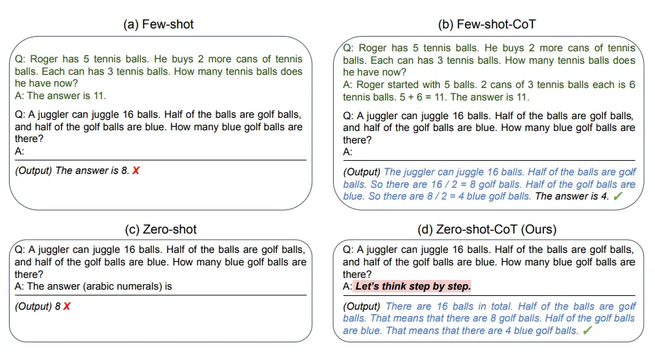

Prompt Engineering
提示工程不仅仅是关于设计和研发提示词。它包含了与大语言模型交互和研发的各种技能和技术。
简介
参数设置
-
Temperature：调整模型的softmax输出层中预测词的概率。
softmax的计算公式为
$$
p(x_i)=\frac{e^{x_i}}{\sum_{j=1}^{V}e^{x_j}}
$$
加入温度系数tempmerature后：
$$
p(x_i)=\frac{\frac{e^{x_i}}{T}}{\sum_{j=1}^{V}\frac{e^{x_j}}{T}}
$$temperature为0到1的数值，数值越大，$p(x_i)$的分布越平滑，采样结果更随机。数值越小，$p(x_i)$的分布差异越大，采样结果越确定。- 对于质量保障（QA）等任务，我们可以设置更低的
temperature值，以促使模型基于事实返回更真实和简洁的结果。 对于诗歌生成或其他创造性任务，适度地调高temperature参数值可能会更好。
-
Top_p：使用Top P意味着只有词元集合（tokens）中包含
top_p概率质量的才会被考虑用于响应。- 公式
- 如果你需要准确和事实的答案，就把参数值调低。如果你在寻找更多样化的响应，可以将其值调高点。
-
Max Length：您可以通过调整
max length来控制大模型生成的 token 数。指定 Max Length 有助于防止大模型生成冗长或不相关的响应并控制成本。 -
Stop Sequences：
stop sequence是一个字符串，可以阻止模型生成 token，指定stop sequences是控制大模型响应长度和结构的另一种方法。例如，您可以通过添加 “11” 作为stop sequence来告诉模型生成不超过 10 个项的列表。 -
Frequency Penalty：
frequency penalty是对下一个生成的 token 进行惩罚，这个惩罚和 token 在响应和提示中已出现的次数成比例，frequency penalty越高，某个词再次出现的可能性就越小，这个设置通过给 重复数量多的 Token 设置更高的惩罚来减少响应中单词的重复。 -
Presence Penalty：
presence penalty也是对重复的 token 施加惩罚，但与frequency penalty不同的是，惩罚对于所有重复 token 都是相同的。出现两次的 token 和出现 10 次的 token 会受到相同的惩罚。 此设置可防止模型在响应中过于频繁地生成重复的词。 如果您希望模型生成多样化或创造性的文本，您可以设置更高的presence penalty，如果您希望模型生成更专注的内容，您可以设置更低的presence penalty。
提示词要素
- 指令：想要模型执行的特定任务或指令。
- 上下文：包含外部信息或额外的上下文信息，引导语言模型更好地响应。
- 输入数据**：用户输入的内容或问题。**
- 输出指示：指定输出的类型或格式。
提示词技术
零样本提示
提示：
1 | 将文本分类为中性、负面或正面。 |
输出：
1 | 中性 |
当零样本不起作用时，建议在提示中提供演示或示例，这就引出了少样本提示。
少样本提示
使用零样本设置时，它们在更复杂的任务上仍然表现不佳。少样本提示可以作为一种技术，以启用上下文学习，我们在提示中提供演示以引导模型实现更好的性能。
提示：
1 | “whatpu”是坦桑尼亚的一种小型毛茸茸的动物。一个使用whatpu这个词的句子的例子是： |
输出：
1 | 当我们赢得比赛时，我们都开始farduddle。 |
模型通过提供一个示例（即1-shot）已经学会了如何执行任务。对于更困难的任务，我们可以尝试增加演示（例如3-shot、5-shot、10-shot等）。
思维链（CoT）提示
链式思考（CoT）提示通过中间推理步骤实现了复杂的推理能力。包括少样本思维链提示和零样本思维链提示。

自动思维链（Auto-CoT）https://www.promptingguide.ai/zh/techniques/cot